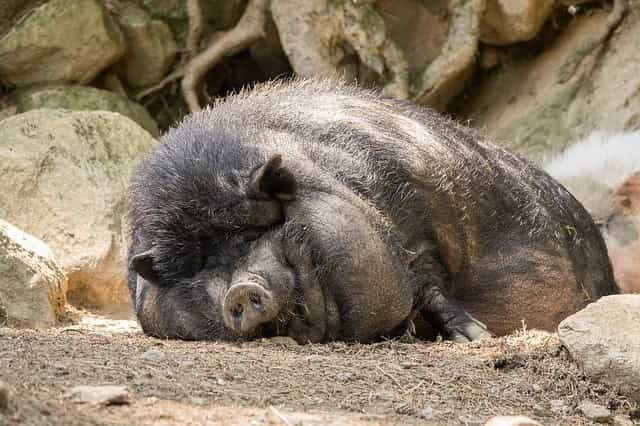

Zach Smith is an independent gentleman, who enjoys reading philosophy and is a connoisseur of fine whiskies, cigars and women.


The last time I went into the doctor for a full physical, they did a hormone test as a matter of routine. 98% of men my age has lower testosterone levels than I do. Although I have had high testosterone since I was a teenager, I have been able to maintain these levels, where many men have not. There are several things that I do that are different than mainstream Americans and I will share them with you and why I believe this has an effect on my testosterone.
None of our food is real anymore, it’s almost like they are intentionally trying to poison you. Many of it contains endocrine disruptors which are either naturally occurring xenoestrogens, a pesticide added to the crop, or even contamination from the packaging. These can damage hormones causing mental problems, obesity, cancer, feminizing of males or masculinizing of females.
Many of the studies done on these are inconclusive because there are so many different chemicals it is difficult to find somebody not exposed to multiple ones to do a valid study on. Even the Roman Empire was thought to have declined due to phytoestrogens in silphium, a relative of the fennel plant.
Soyim, I don’t even.
The soy boy meme is a real phenomena. Decades ago, unfermented soy used to be considered unfit for human consumption, and there were limits on how much it could be fed to livestock. The supply quickly overshadowed the demand, because it was so cheap and easy to farm. Eventually this leads to it getting rushed through FDA approval so it could be used in human food.
Since producing massive quantities of bland, tasteless soy is cheaper and easier than a variety of real foods, most food companies turn to making foods loaded with soy as filler and excessive sugar and salt to enhance the taste. At this point the only way to fix it is to cut all subsidies to soy, but that would mostly just mean more corn.
It used to not be allowed for use in food because we knew the negative health effects, but agribusiness funded scientific studies to say it’s good for you. If you look at the scientific studies of the health benefits of soy, you’ll see they’re just the opposites of the negative health effects of excessive testosterone. Cut all soy from your diet and replace it with nothing.

Coffee beans has the phytoestrogen trigonelline, which accounts for around 1% of it’s weight. This is a chemical in the seed oils of coffee and doesn’t have anything to do with caffeine itself. Also, because coffee is so bitter, people generally add sugar and soy milk to cut its flavor down. Cut coffee from your diet and replace it with tea. I drink unsweetened cold tea. Don’t load up your tea with a bunch of sugar.
Whenever you think of corn, think of these hermaphroditic frogs having sex.
Corn is another food with limited nutritional benefit and is commonly used as animal feed. Corn is a grass and is sprayed with atrazine. Atrazine is infamous for turning frogs hermaphroditic, according to researchers at the University of California.
Before, we knew we got fewer males than we should have, and we got hermaphrodites. Now, we have clearly shown that many of these animals are sex-reversed males,” Hayes said. “We have animals that are females, in the sense that they behave like females: They have estrogen, lay eggs, they mate with other males. Atrazine has caused a hormonal imbalance that has made them develop into the wrong sex, in terms of their genetic constitution.
Of course these studies haven’t been limited to frogs, they have also been done on fish, reptiles, birds and even mammals. Corn is another product heavily subsidized by the government so it is added in almost all processed foods.

Obviously everyone knows that sugar is just empty calories, but sugarcane is also heavily sprayed with atrazine so should be avoided for the same reasons. Instead of sugar as a sweetener, use honey, maple syrup, maple sugar or agave nectar. If you just have to have sugar, try to find an organic sugar so at least it hasn’t been sprayed with toxins.

Pork is fed a diet of corn and soybeans. Pigs do not have sweat glands like humans, so they are not able to sweat out toxins like we are, meaning that pigs concentrate toxins in their fat. If you are going to all the trouble to avoid soy and corn, don’t sit here and eat pork. For the same reason that you avoid pork, also avoid chicken. Chicken are fed nothing but corn of the lowest grade. Instead of pork or chicken, eat beef, preferably grass fed.
Farmed fish are fed pelleted soy and absolute trash. Their meat has to be dyed for it to even look appetizing. Instead eat wild caught fish. Salmon, cod, crab, clams, oysters, mussels, shrimp, scallops or lobster are all good choices.

Many of the chemicals in plastics are endocrine disruptors, although they are trying to use less and less of them. I do not store my food in plastic, only glass, which is chemically inert. Many non-stick and modern cooking pans contain endocrine disruptors as well. Instead use cast iron cookware, which has been used for hundreds of years with no issues.
If soap is the yardstick of civilization, how does our society measure up?
Many ingredients in soaps, shampoos and detergents are also xenoestrogens. This is not something that is required to be in soap, however it is generally added to all mass market soaps. Either buy basic soaps such as Castille Soap, or go full Tyler Durden and make your own. You can easily make your own soaps in bulk once every few years.
I make laundry detergent in 5-gallon buckets. Don’t eat Tide pods, don’t even wash your clothes with them. You won’t have that chemical stink I can smell from a block away and your testosterone levels will thank you.
Think about what it would’ve been like if you weren’t slowly poisoned your entire life. Good news is you can eat and live properly now and still make a difference, have normal testosterone, and behave like a man. If your food has a label, it probably isn’t healthy, unless is is a very short list of ingredients you recognize. I don’t read many labels because I buy whole, unprocessed foods that don’t have complex nutrition labels.
Eat mostly fresh, unprocessed foods, buy vegetables that were farmed without pesticides, don’t package foods in plastic, cook over cast iron, and use basic ingredient soaps. Then you too can maintain your testosterone levels like I did.
Read More: The Media Establishment Hires Soy Boys To Help Spread Their Anti-Masculine Agenda